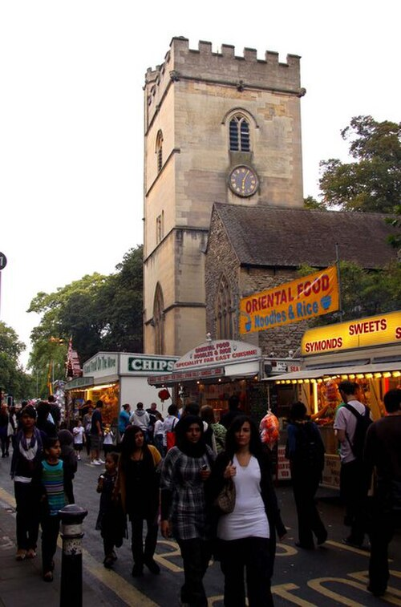
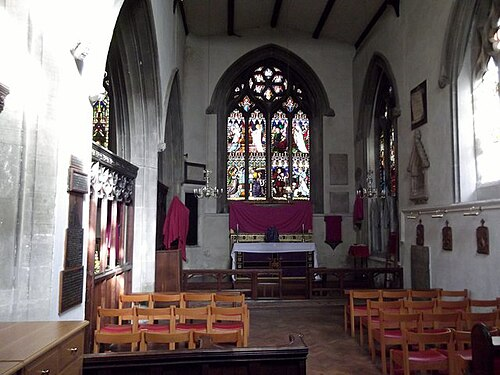
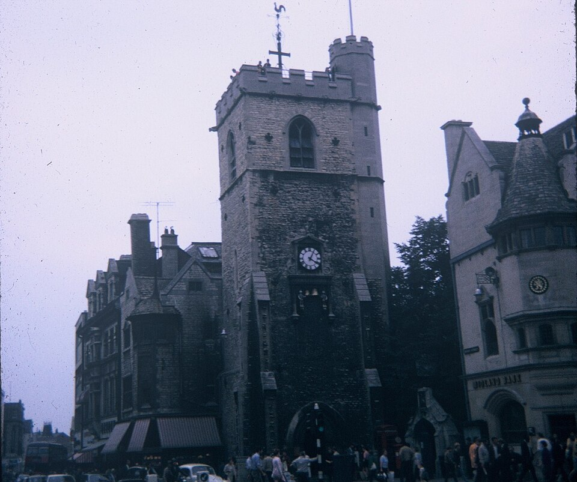
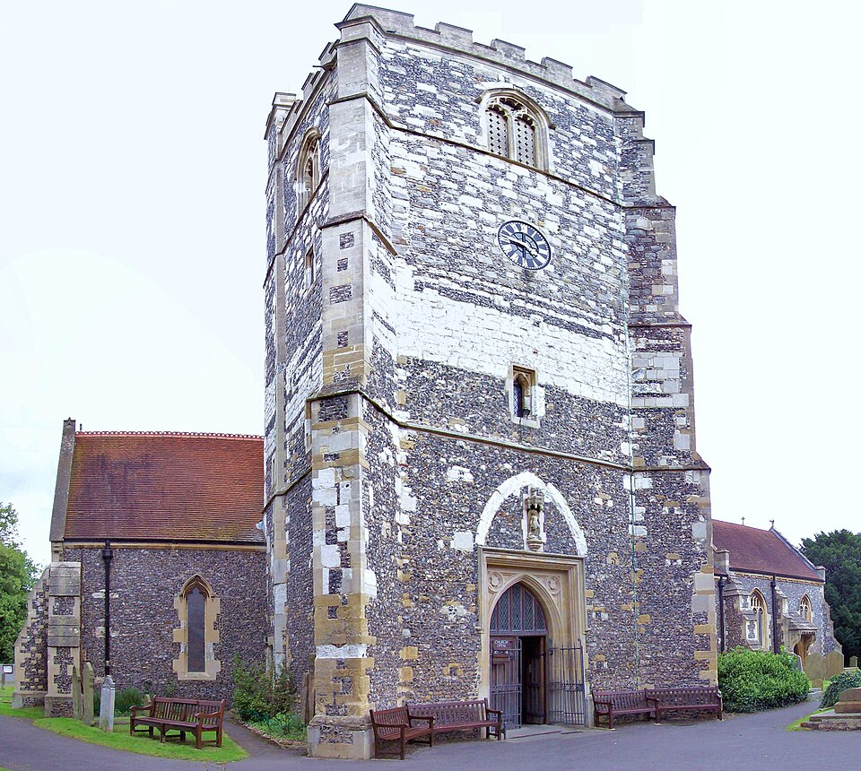
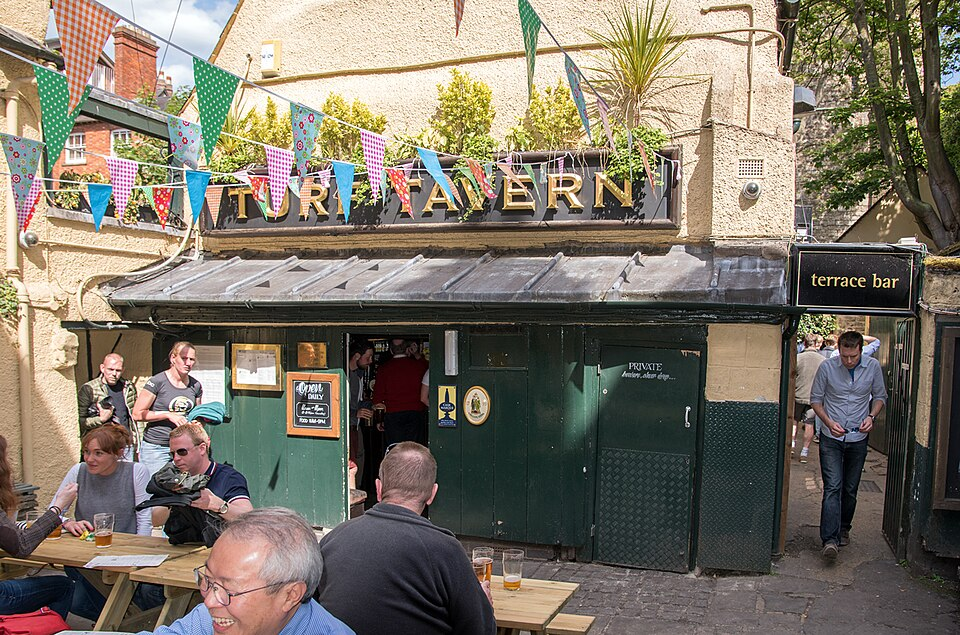

Роман · 1979
Служба всех усопших
Service of All the Dead — четвёртый роман об инспекторе Морсе. Русское название рабочее.
- Первое издание
- Macmillan, Лондон, 18 октября 1979
- Премия
- «Серебряный кинжал» Ассоциации авторов детективов, 1979
- Расследуют
- инспектор Морс и сержант Льюис
- Место
- вымышленная церковь Святой Фридесвиды на Корнмаркет в центре Оксфорда
- Экранизация
- «Инспектор Морс», 20 января 1987, третья серия первого сезона; режиссёр Питер Хэммонд, сценарий Джулиана Митчелла
Завязка
Морс в отпуске. Тем временем в церкви Святой Фридесвиды прямо во время службы убит церковный староста Гарри Джозефс, а вскоре викарий Лайонел Лоусон разбивается, упав с церковной башни; это сочли самоубийством. Дело вёл инспектор Белл, но он слёг с гриппом, и оно достаётся Морсу. Тот выясняет, что жертву перед ударом ножом в спину отравили морфием, и с этой минуты отпуск кончается.
Роман устроен необычно: он разделён на четыре книги, у каждой название из Библии и своя манера. Первая знакомит с героями и их страстями, вторая — расследование, третья написана как показания Рут Роулинсон, данные Льюису, четвёртая почти целиком состоит из судебных материалов. За этот роман Декстер получил первый из двух своих «Серебряных кинжалов».
Здесь же Морс признаётся Льюису, что боится высоты, и именно здесь ему придётся подняться на церковную башню.
Развязка — открыть, если роман прочитан
Убитый в церкви — не Гарри Джозефс. Это брат викария, Филип Лоусон, опустившийся и шантажировавший Лайонела; Рут Роулинсон по договорённости опознала его тело как тело Гарри. Убийца — сам Гарри. После этого он убивает органиста Пола Морриса и его двенадцатилетнего сына Питера, а затем свою жену Бренду. Морс решает, что следующей будет Рут, ставит Льюиса наблюдать из дома напротив, сам прячется в церкви и сталкивается с убийцей на вершине башни. В борьбе Гарри падает и разбивается.
Показания Рут, по которым она лишь свидетельница, Морс называет лжесвидетельством и рвёт. Её приговаривают к полутора годам. Смерть Лайонела Морс считает самоубийством, хотя одна из последних сцен намекает на убийство. В самом конце Морс приходит к вышедшей на свободу Рут, и у них начинается роман.
Люди
| Имя | Кто это |
|---|---|
| Лайонел Лоусон | Викарий церкви Святой Фридесвиды, чуть за сорок; бессребреник. |
| Филип Лоусон | Его брат, без работы и без денег; похож на Лайонела. |
| Гарри Джозефс | Бывший коммандос, церковный староста, игрок. |
| Бренда Джозефс | Его жена, медсестра Рэдклиффской больницы. |
| Пол Моррис | Вдовец, учитель музыки, органист и регент церковного хора. |
| Питер Моррис | Его сын, двенадцать лет, поёт в хоре. |
| Рут Роулинсон | Убирает в церкви, живёт с больной матерью. В неё влюбляется Морс. |
| Кит Миклджон | Новый викарий; помогает полиции и сердится на бесцеремонность Морса. |
| Инспектор Белл | Начинал дело, слёг с гриппом. |
Места
Церковь Святой Фридесвиды выдумана, но Декстер поставил её на Корнмаркет, в самое сердце города. Больше всего она похожа на церковь Святой Марии Магдалины на Магдален-стрит; маленькая церковь Святого Михаила у Северных ворот на Корнмаркет для неё мала. Настоящая Фридесвида — покровительница Оксфорда: её монастырь стоял на месте нынешнего Крайст-Чёрч, а церковь её имени сейчас есть на Ботли-роуд.
| Место | Что там происходит | |
|---|---|---|
| Св. Фридесвида | вымысел | Церковь на Корнмаркет, где всё происходит. |
| Св. Мария Магдалина | есть | Церковь на Магдален-стрит, ближе всего к декстеровской. |
| Карфакс | есть | Перекрёсток в центре и башня, оставшаяся от церкви Святого Мартина. |
| «Бульдог» | паб | Паб на Сент-Олдейтс напротив Крайст-Чёрч. |
| «Золотой крест» | есть | Старый постоялый двор с внутренним двором у Корнмаркет. |
| «Брат Бэкон» | паб | Назван в честь средневекового оксфордского учёного-францисканца Роджера Бэкона. |
| Рэдклиффская больница | была | Больница на Вудсток-роуд, где работает Бренда. Теперь здесь университетский квартал. |








Морс в этом романе
Морсу сорок семь, он в отпуске и не знает, куда себя деть. Ездит на «Лянче», но иногда и на автобусе, читает «Таймс» и воскресную «Ньюс оф зе уорлд», смотрит телевизор и ставит на лошадей. Мальчиком он боялся темноты, купил книгу об архитектуре и обходил церкви одну за другой. Рут Роулинсон замечает его бледно-голубые глаза и печаль человека, который что-то ищет.
Главное здесь — признание: Морс боится высоты. Развязка на церковной башне написана так, чтобы этот страх стал частью сюжета.
Музыка
В романе звучат «Четыре последние песни» Рихарда Штрауса, «Микадо» Гилберта и Салливана и Реквием Форе.
Льюис
У Льюиса две дочери-подростка, он читает «Санди экспресс», а миссис Льюис кормит Морса завтраком.
Книги и стихи
- Псалом 83:11 (в английской Библии 84:10) открывает роман. В Синодальном переводе: «Желаю лучше быть у порога в доме Божием, нежели жить в шатрах нечестия».
- Теннисон, «In Memoriam A. H. H.» — строка о мутном моросящем дожде над голой улицей.
- Роберт Саути, «Водопад Лодора» — вопрос о том, как падает вода у Лодора.
- Бодлер, «Цветы зла» — образ богатого, но бессильного короля, молодого и очень старого.
- Кольридж — Морс вспоминает его пристрастие к свечам.
Реалии
- Фридесвида
- Англосаксонская святая VIII века, покровительница Оксфорда. Её мощи хранились в монастыре, на месте которого стоит собор Крайст-Чёрч.
- Церковный староста (churchwarden)
- Мирянин, который отвечает за имущество прихода, в том числе за деньги из кружки для пожертвований. Лайонел подозревает, что Гарри их ворует.
- Коммандос
- Британские части особого назначения, созданные во Вторую мировую войну. Для прихожан Гарри — человек с военным прошлым и крепкими нервами.
- Рэдклиффская больница (Radcliffe Infirmary)
- Главная больница Оксфорда с XVIII века; закрылась в 2007 году, её здания отошли университету.
- Лжесвидетельство (perjury)
- Заведомо ложные показания под присягой. За него Рут и получает полтора года.
- Карфакс
- Главный перекрёсток Оксфорда. От церкви Святого Мартина осталась одна башня; по традиции в центре города нельзя строить выше неё.
Книга и сериал
Серия вышла 20 января 1987 года и закрыла первый сезон. В ролях: Джон Тоу, Кевин Уотли, Анджела Морант (Рут Роулинсон), Джон Нормингтон (Лайонел Поулин), Морис О'Коннелл (Гарри Джозефс), Джеймс Гриффитс (Пол Моррис), Майкл Хордерн (доктор Старки), Норман Джонс (Белл). Сам Декстер мелькает в кадре примерно на 34-й минуте.
- Действие сжато с нескольких месяцев до нескольких дней, и Морс участвует в деле с самого начала.
- Лайонел носит фамилию Поулин, его брата зовут Саймон, церковь посвящена Святому Освальду.
- В финале Морс навещает Рут не после её освобождения, а в камере после приговора.
- Башню снимали у церкви Святого Михаила в Брее (Беркшир). Интерьеры, по предположению фанатов, — в церкви Святого Креста в Оксфорде. Паб «Зелёный человек» сыграла таверна «Торф» (Turf Tavern).
- Музыка: прелюдия и фуга ля минор Баха (BWV 543) на титрах, увертюра к «Эврианте» Вебера в машине Морса, мотет Брукнера «Locus iste» в церкви, Палестрина, токката, адажио и фуга до мажор Баха (BWV 564) на органе и четвёртое действие «Манон Леско» Пуччини на проигрывателе Морса.
